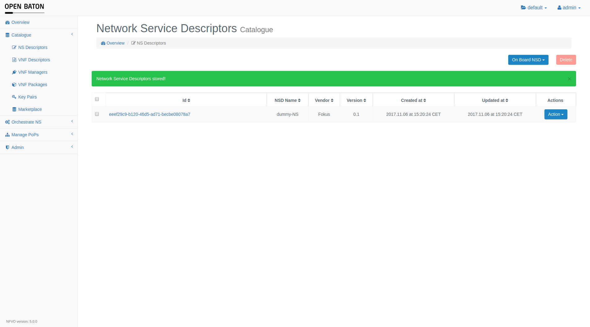
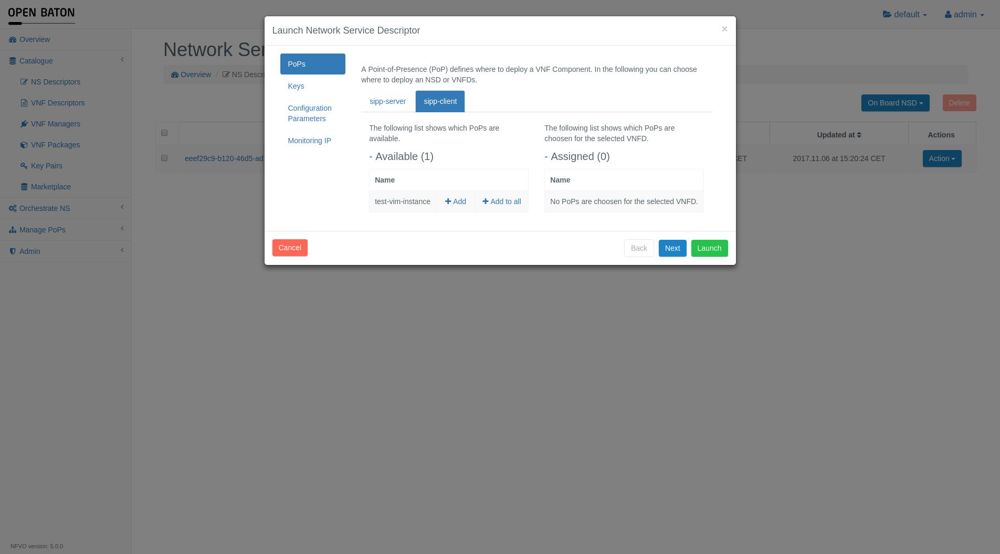

Tutorial: SIPp Network Service
This tutorial explains how to deploy a network service that uses SIPp.
SIPp is a free Open Source test tool / traffic generator for the SIP protocol which follows a client/server approach. In the following you will see how to create the NSD which defines the allocations of virtual resources, the installation and configuration of the the SIPp server and client. Furthermore, you can see how to create dependencies.
This tutorial makes use of:
Requirements
In order to execute this scenario, you need to have the following components up and running:
- Configured and running NFVO
- Running OpenStack vim driver
- Running Generic VNFM
- Configured and running OpenStack environment
Store the Vim Instance
For registering the Point of Presence of type OpenStack to the NFVO you have to upload a Vim Instance. You can use the following json descriptor by changing the values to your needs.
Using the dashboard
If you want to use the Dashboard (checkout the dashboard documentation for more information on how to use it), open it at the URL http://ip-where-nfvo-runs:8080 (change port and protocol if you use SSL) and log in (default username and password are admin and openbaton).
Go to Manage PoPs -> PoP Instances and choose the Vim Instance of your choice by clicking on Register Vim and selecting the Vim Instance's json file.

Using the CLI
If you want to use the CLI (checkout the Open Baton Client documentation for more information on how to install and use it), you need to execute the following command in order to onboard the Vim Instance where vim-instance.json is the path to the Vim Instance file:
$./openbaton.sh VimInstance-create vim-instance.json
Store the Network Service Descriptor
Download the SIPp NSD using private IPs or SIPp NSD using floating IPs, and upload it in the catalogue either using the dashboard or the CLI.
The difference is that the first NSD will deploy Virtual Machines without floating IPs on OpenStack whereas the second one will use floating IPs.
Using the dashboard
If you want to use the Dashboard go to Catalogue -> NS Descriptors and choose the NSD of your choice by clicking on Upload NSD and selecting the Descriptor's json file.

Using the CLI
If you want to use the CLI you need to execute the following command in order to onboard the NSD:
$./openbaton.sh NetworkServiceDescriptor-create NetworkServiceDescriptor-SIPp-FloatingIPs.json
Once this request is processed successfully, it returns the following:
+------------------ +----------------------------------------------------------------- +
| PROPERTY | VALUE |
+------------------ +----------------------------------------------------------------- +
| VNFD | |
| | id: b9e7fb33-d777-43e2-9120-8d5ab5478c3f - name: sipp-server |
| | id: 1f35a049-b3fc-4905-b495-d0c30e8560e1 - name: sipp-client |
| | |
| VNF_DEPENDENCY | |
| | id: 46a85018-221e-4f6e-9b58-8f2b4143a4ab |
| | |
| id | a4882ae8-8f43-4646-8a36-475b6b0560b3 |
| | |
| hb_version | 1 |
| | |
| name | NSD SIPp Floating IPs |
| | |
| projectId | 0c60579d-a2aa-486a-b2a4-dc93f9c64fa7 |
| | |
| vendor | FOKUS |
| | |
| version | 1.0 |
| | |
| VLD | |
| | id: d296dbb8-b966-4d01-b8ed-01e5faf88a67 - name: private |
| | |
+------------------ +----------------------------------------------------------------- +
Deploy the Network Service Descriptor
As soon as you onboarded the NSD in the NFVO you can deploy this NSD either by using the dashboard or the CLI.
This will create a Network Service Record (NSR) and actually launch the Virtual Machines on OpenStack.
Using the dashboard
This part shows you how to deploy an onboarded NSD via the dashboard. You need to go to the GUI again and navigate to Catalogue -> NS Descriptors. Open the drop down menu by clicking on Action. Afterwards you need to press the Launch button and a window with launching options will appear. Just click on Launch again in order to start the deployment of this NSD.

If you go to Orchestrate NS -> NS Records in the menu on the left side, you can follow the deployment process and check the current status of the created NSR.
Using the CLI
You can also use the CLI for deploying existing NSDs. The command needs the ID of the NSD to deploy as an argument. It can be found either by using the dashboard or getting it from the output when onboarding a new NSD as done in the previous step. The command to deploy the previously onboarded NSD looks like shown below:
$./openbaton.sh NetworkServiceRecord-create 82ac4b14-a014-4185-b1b2-c4b0f9b1712e vimmap.json keypair.json conf.json
The first argument is the ID of the NSD from which the NSR will be created. The following arguments are files that can contain additional configuration while deploying.
You have to pass these files even if you do not want to pass any configuration like in our case. So just create the three files and fill them with empty json objects/arrays (i.e. {} and []).
The vimmap.json and the conf.json files should contain this:
{}
And the keypair.json file this:
[]
The execution of this command produces the following output:
+------------------------ +------------------------------------------------------------- +
| PROPERTY | VALUE |
+------------------------ +------------------------------------------------------------- +
| id | a648c1fa-621e-4cc3-9f27-8e950e695d17 |
| | |
| vendor | FOKUS |
| | |
| projectId | 0c60579d-a2aa-486a-b2a4-dc93f9c64fa7 |
| | |
| task | Onboarding |
| | |
| version | 1.0 |
| | |
| VLR | |
| | id: 492af81d-42dc-43c2-af7b-a5149451edc7 - name: private |
| | |
| VNF_DEPENDENCY | |
| | id: 46d28db8-d80e-4c3d-b2e6-a6dfbad80e1c |
| | |
| descriptor_reference | 82ac4b14-a014-4185-b1b2-c4b0f9b1712e |
| | |
| status | NULL |
| | |
| createdAt | 2016.10.27 at 17:35:01 MESZ |
| | |
| name | NSD SIPp Floating IPs |
| | |
+------------------------ +------------------------------------------------------------- +
In order to follow the deployment process you can retrieve information by passing the ID of the deploying NSR to this command:
$./openbaton.sh NetworkServiceRecord-findById a648c1fa-621e-4cc3-9f27-8e950e695d17
+------------------------ +----------------------------------------------------------------- +
| PROPERTY | VALUE |
+------------------------ +----------------------------------------------------------------- +
| id | a648c1fa-621e-4cc3-9f27-8e950e695d17 |
| | |
| vendor | FOKUS |
| | |
| projectId | 0c60579d-a2aa-486a-b2a4-dc93f9c64fa7 |
| | |
| task | Onboarded |
| | |
| version | 1.0 |
| | |
| VLR | |
| | id: 492af81d-42dc-43c2-af7b-a5149451edc7 - name: private |
| | |
| VNFR | |
| | id: bda67156-49ec-40c9-a58d-e00623e8e2ef - name: sipp-server |
| | id: ec95ff3b-9013-4f57-a782-e51f40c7cb8a - name: sipp-client |
| | |
| VNF_DEPENDENCY | |
| | id: 46d28db8-d80e-4c3d-b2e6-a6dfbad80e1c |
| | |
| descriptor_reference | 82ac4b14-a014-4185-b1b2-c4b0f9b1712e |
| | |
| status | ACTIVE |
| | |
| createdAt | 2016.10.27 at 17:35:01 MESZ |
| | |
| name | NSD SIPp Floating IPs |
| | |
+------------------------ +----------------------------------------------------------------- +
Conclusions
When all the VNF Records are done with all of the scripts defined in the lifecycle events, the NFVO will put the state of the VNF Record to ACTIVE and when all the VNF Records are in state ACTIVE, also the Network Service Record will be in state ACTIVE. This means that the service is deployed correctly. For learning more about the states of a VNF Record please refer to the VNF Record state documentation.
Configuration Parameters
Additionally, there are a bundge of parameters which can configure the SIP client to simulate several scenarios such as increasing number of calls, changing the call rates or changing the transport mode. These parameters can be changed inside the NSD directly or provided during the launch of the NSD. Below you can find the configuration parameters as put in the SIPp NSD, in particular in the SIPp client VNFD. Checkout the following overview of all available paramters and the meanings.
"configurations": {
"configurationParameters": [
{
"confKey": "SIPP_LENGTH",
"value": "0",
"description": "Controls the length (in milliseconds) of calls. More precisely, this controls the duration of 'pause' instructions in the scenario, if they do not have a 'milliseconds' section. Default value is 0."
},
{
"confKey": "SIPP_RATE",
"value": "10",
"description": "Set the call rate (in calls per seconds). Default is 10. If the -rp option is used, the call rate is calculated with the period in ms given by the user."
},
{
"confKey": "SIPP_RATE_PERIOD",
"value": "1000",
"description": "Specify the rate period in milliseconds for the call rate. Default is 1 second. This allows you to have n calls every m milliseconds (by using -r n -rp m). Example: -r 7 -rp 2000 ==> 7 calls every 2 seconds."
},
{
"confKey": "SIPP_RATE_MAX",
"value": "10",
"description": "If -rate_increase is set, then quit after the rate reaches this value. Example: -rate_increase 10 -max_rate 100 ==> increase calls by 10 until 100 cps is hit."
},
{
"confKey": "SIPP_RATE_INCREASE",
"value": "0",
"description": "Specify the rate increase every -fd seconds. This allows you to increase the load for each independent logging period. Example: -rate_increase 10 -fd 10 ==> increase calls by 10 every 10 seconds."
},
{
"confKey": "SIPP_RTP_ECHO",
"value": "10",
"description": "Enable RTP echo. RTP/UDP packets received on port defined by -mp are echoed to their sender. RTP/UDP packets coming on this port + 2 are also echoed to their sender (used for sound and video echo)."
},
{
"confKey": "SIPP_TRANSPORT_MODE",
"value": "u1",
"description": "Set the transport mode: - u1: UDP with one socket (default), - un: UDP with one socket per call, - ui: UDP with one socket per IP address The IP addresses must be defined in the injection file. - t1: TCP with one socket, - tn: TCP with one socket per call, - l1: TLS with one socket, - ln: TLS with one socket per call, - c1: u1 + compression (only if compression plugin loaded), - cn: un + compression (only if compression plugin loaded)."
}
],
"name": "sipp-configuration"
}
Dependencies between VNFs
When you access your OpenStack dashboard you should be able to see the deployed Virtual Machines. One of them will act as a SIPp server and the other one as a SIPp client that connects to the server.
In this scenario the SIPp server is the source of a dependency and the client is the target. This mean the client needs the IP of the server in order to connect.
Let's have a look at the NSD we used to deploy this scenario in order to see how the dependencies are described.
You will see that the NSD contains a field called vnf_dependency.
"vnf_dependency":[
{
"source":{
"name":"sipp-server"
},
"target":{
"name":"sipp-client"
},
"parameters":[
"private"
]
}
]
The json array vnf_dependency may contain multiple dependencies. In our case it is just one, which describes that the VNFD named sipp-client needs a parameter called private from the VNFD sipp-server. This parameter can be used by the sipp-client as a variable in its lifecycle scripts.
Also the lifecycle scripts are specified in the NSD. For example the VNFD sipp-client has the following lifecycle events:
"lifecycle_event":[
{
"event":"CONFIGURE",
"lifecycle_events":[
"server_sipp_start.sh"
]
},
{
"event":"INSTANTIATE",
"lifecycle_events":[
"sipp_install.sh"
]
}
]
You can see that there is one lifecycle event called INSTANTIATE and one called CONFIGURE. Actually there exist also other lifecycle events, read about them here.
Each one will be executed at a different point in time. By execution we mean that the scripts that are listed in the lifecycle_events field will run with root permissions on the Virtual Machine.
The scripts are located in a public git repository. The url is specified in the vnfPackageLocation field in the VNFDs.
In our example the INSTANTIATE event will run first after the Virtual Machine was initialized. It will run the sipp_install.sh script which installs SIP and screen on the Virtual Machine.
The CONFIGURE lifecycle event starts after the INSTANTIATE lifecycle event. The CONFIGURE lifecycle event has a special role. In the lifecycle scripts of this event the dependency parameters are available.
That is why we use this event to tell SIP to connect to the server ip. In the example NSD that uses floating IPs the dependency parameter is called private.
In the CONFIGURE lifecycle script we will therefore run
screen -d -m -S client sipp -sn uac $server_private -d $SIPP_LENGTH -r $SIPP_RATE -rp $SIPP_RATE_PERIOD -rate_increase $SIPP_RATE_INCREASE -fd $SIPP_RATE_INCREASE -rate_max $SIPP_RATE_MAX -rtp_echo -t $SIPP_TRANSPORT_MODE -trace_msg -trace_screen -trace_err -trace_rtt -trace_logs -trace_rtt -trace_logs
You wonder why the variable in the script has another name than the dependency parameter? Well, you have to prepend the type of the source VNFD and an underscore to the variable. This is why private becomes server_private.
And there is another restriction. In order to use the dependency parameter in the CONFIGURE script its name has to start with the source VNFD type followed by an underscore.
If you want to learn more about dependencies, lifecycle events and variables read this section.
The process in details
Let's again have a look at the sequence diagram of a create Network Service Record operation.

When the Network Service Record create is called with the SIP Network Service Descriptor's id, the steps defined in the sequence diagram above happen.
INSTANTIATE Method
The first message sent to the Generic VNFM is the INSTANTIATE message (1). This message contains the VNF Descriptor and some other parameters needed to create the VNF Record, for instance the list of Virtual Link Records. The Generic VNFM is called and then the create Virtual Network Function Record and the Virtual Network Function Record is created (2) and sent back to the NFVO into a GrantOperation message (3). This message will trigger the NFVO to check if there are enough resources to create that VNF Record. If so, then a GrantOperation message with the updated VNF Record is sent back to the Generic VNFManager. Then the Generic VNFManager creates an AllocateResources message with the received VNF Record and sends it to the NFVO (4). After creating the resources (VMs) the NFVO sends back the AllocateResources message to the VNFManager. Here the instantiate method is called (5). Inside this method, the scripts contained in the VNF Package (or the git repository containing the scripts) is sent to the EMS, the scripts are saved locally to the VM and then the Generic VNFManager will call the execution of each script defined in the VNF Descriptor (6). Once all of the scripts are executed and there wasn't any error, the VNFManager sends the Instantiate message back to the NFVO (7).
MODIFY Method
If the VNF is target for some dependencies, like the SIP client, the MODIFY message is sent to the VNFManager by the NFVO (8). Then the VNFManager executes the scripts contained in the CONFIGURE lifecycle event defined in the VNF Descriptor (9), and sends back the modify message to the NFVO (10), if no errors occurred. In this case, the scripts environment will contain the variables defined in the related VNF dependency.
START Method
Here exactly as before, the NFVO sends the START message to the Generic VNFManager (11), and the VNFManager calls the EMS for execution of the scripts defined in the START lifecycle (none for this example) (12). And the start message is then sent back to the NFVO meaning that no errors occurred (13).